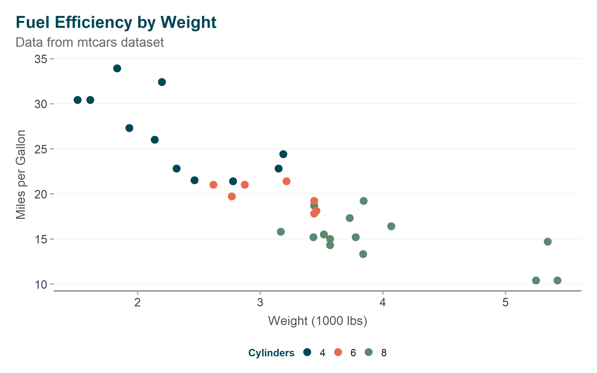
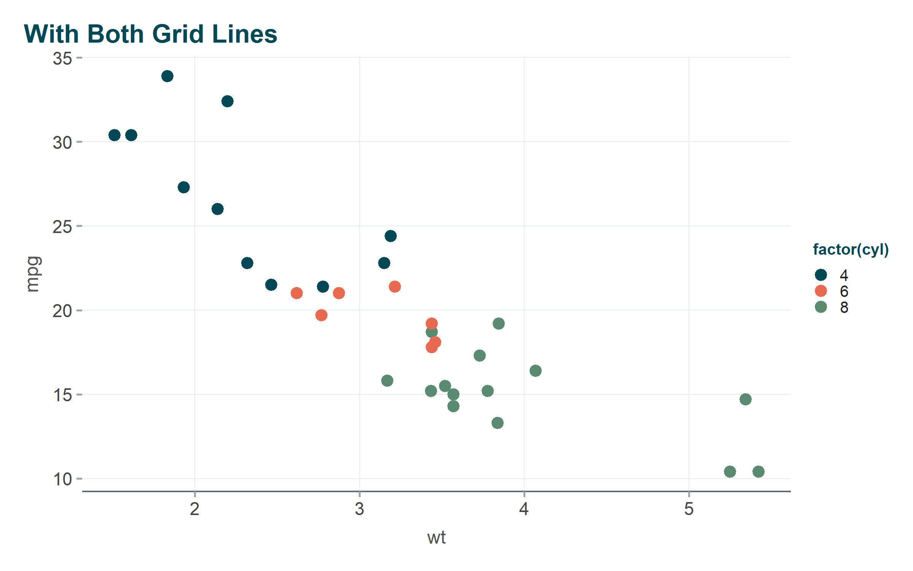
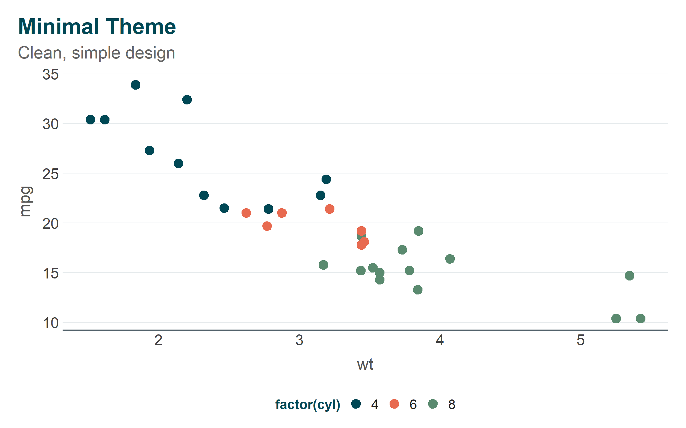
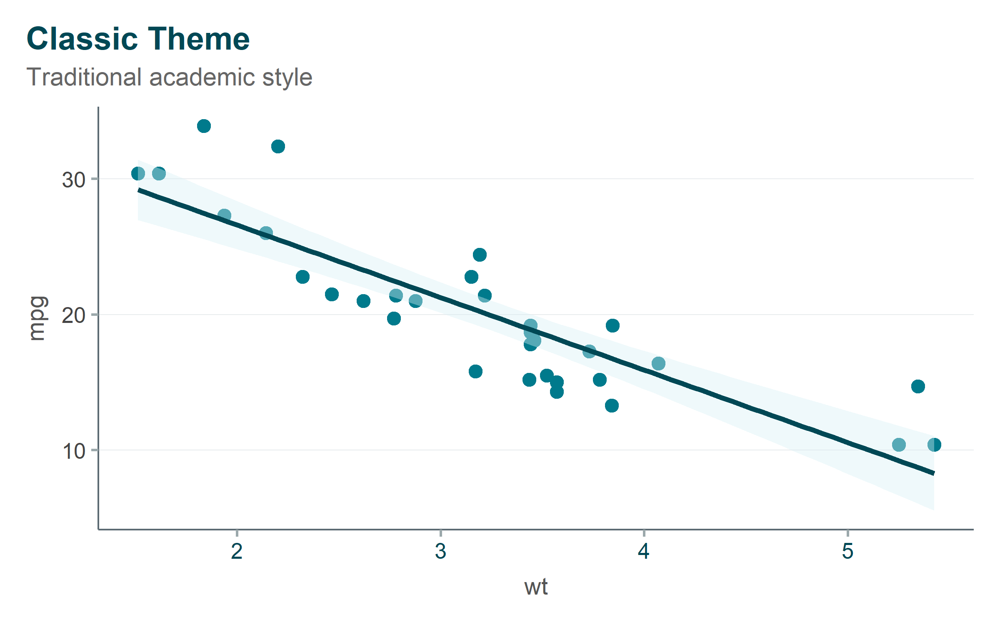
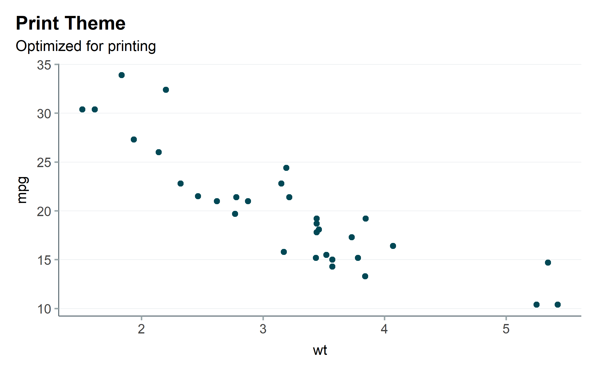
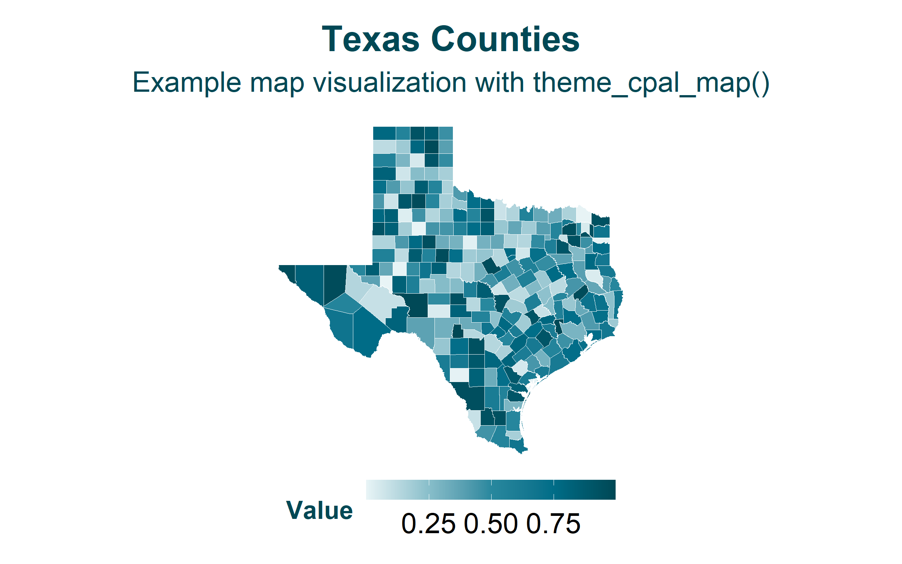
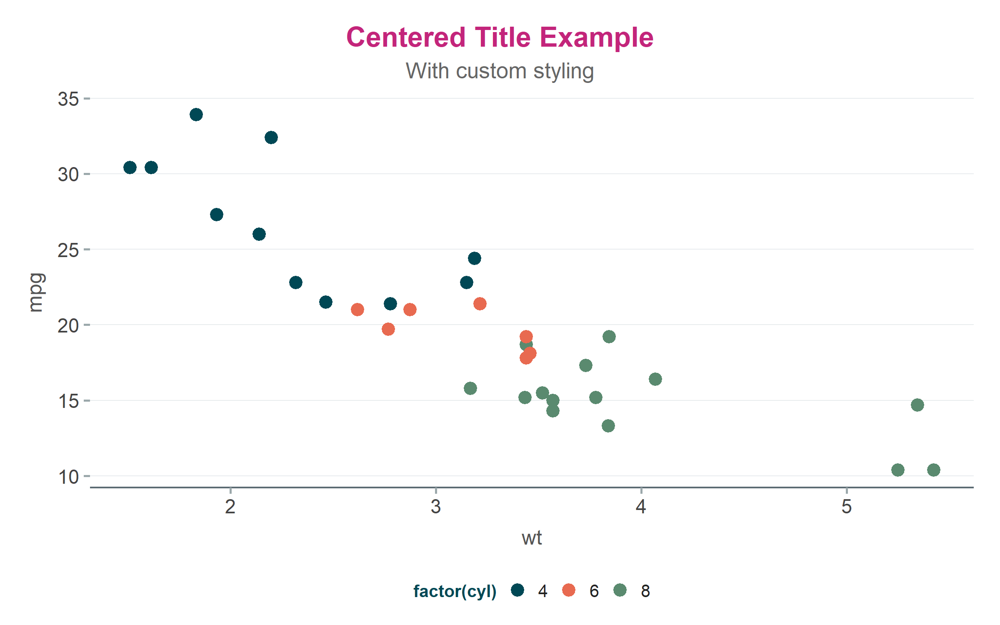

Show code
ggplot(mtcars, aes(x = wt, y = mpg)) +
geom_point(color = "#007A8C", size = 3) +
labs(
title = "Vehicle Fuel Efficiency",
x = "Weight (1000 lbs)",
y = "Miles per Gallon"
) +
theme_cpal()
Consistent ggplot2 themes for CPAL visualizations
The cpaltemplates theme system provides 11 functions for creating consistently branded ggplot2 visualizations. Each theme is designed for specific use cases while maintaining CPAL’s visual identity.
ggplot(mtcars, aes(x = wt, y = mpg)) +
geom_point(color = "#007A8C", size = 3) +
labs(
title = "Vehicle Fuel Efficiency",
x = "Weight (1000 lbs)",
y = "Miles per Gallon"
) +
theme_cpal()
theme_cpal() - Default ThemeThe primary CPAL theme with full customization options.
ggplot(mtcars, aes(x = wt, y = mpg, color = factor(cyl))) +
geom_point(size = 3) +
scale_color_cpal("main_3") +
labs(
title = "Fuel Efficiency by Weight",
subtitle = "Data from mtcars dataset",
x = "Weight (1000 lbs)",
y = "Miles per Gallon",
color = "Cylinders"
) +
theme_cpal()
Customization options:
ggplot(mtcars, aes(x = wt, y = mpg, color = factor(cyl))) +
geom_point(size = 3) +
scale_color_cpal("main_3") +
labs(title = "With Both Grid Lines") +
theme_cpal(grid = "both", legend_position = "right")
theme_cpal_minimal() - Clean DesignA minimal variant with reduced visual elements:
ggplot(mtcars, aes(x = wt, y = mpg, color = factor(cyl))) +
geom_point(size = 3) +
scale_color_cpal("main_3") +
labs(
title = "Minimal Theme",
subtitle = "Clean, simple design"
) +
theme_cpal_minimal()
theme_cpal_classic() - Traditional StyleTraditional styling with axis lines on both x and y:
ggplot(mtcars, aes(x = wt, y = mpg)) +
geom_point(color = "#007A8C", size = 3) +
geom_smooth(method = "lm", color = "#004855", fill = "#D8EFF4") +
labs(
title = "Classic Theme",
subtitle = "Traditional academic style"
) +
theme_cpal_classic()
theme_cpal_dark() - Dark BackgroundDark background variant for presentations and dark-mode applications:
ggplot(mtcars, aes(x = wt, y = mpg, color = factor(cyl))) +
geom_point(size = 3) +
scale_color_cpal("main_3") +
labs(
title = "Dark Theme",
subtitle = "Ideal for presentations",
color = "Cylinders"
) +
theme_cpal_dark()
theme_cpal_print() - Print OptimizedOptimized for printing with high contrast:
ggplot(mtcars, aes(x = wt, y = mpg)) +
geom_point(color = "#004855", size = 2) +
labs(
title = "Print Theme",
subtitle = "Optimized for printing"
) +
theme_cpal_print()
theme_cpal_map() - Geographic VisualizationsSpecialized theme for maps (no axes, minimal chrome):
# Get Texas counties from tigris
if (requireNamespace("tigris", quietly = TRUE) && requireNamespace("sf", quietly = TRUE)) {
options(tigris_use_cache = TRUE)
tx_counties <- tigris::counties(state = "TX", cb = TRUE, progress_bar = FALSE)
# Add sample data for coloring
set.seed(42)
tx_counties$value <- runif(nrow(tx_counties))
ggplot(tx_counties) +
geom_sf(aes(fill = value), color = "white", linewidth = 0.1) +
scale_fill_cpal_c("teal_seq_5") +
labs(
title = "Texas Counties",
subtitle = "Example map visualization with theme_cpal_map()",
fill = "Value"
) +
theme_cpal_map()
} else {
# Fallback if tigris not available
ggplot(data.frame(x = rnorm(50), y = rnorm(50), value = runif(50))) +
geom_point(aes(x = x, y = y, color = value), size = 4) +
scale_color_cpal_c("teal_seq_5") +
labs(title = "Map Theme Example", subtitle = "(Install tigris for real map data)") +
theme_cpal_map()
}
preview_cpal_themes()
theme_cpal() Arguments| Argument | Options | Default |
|---|---|---|
base_size |
Numeric (font size in pts) | 16 |
base_family |
Font family name | Auto-detected |
style |
“default”, “minimal”, “classic”, “dark” | “default” |
grid |
“horizontal”, “vertical”, “both”, “none” | “horizontal” |
axis_line |
“x”, “y”, “both”, “none” | “x” |
axis_title |
TRUE/FALSE | TRUE |
legend_position |
“bottom”, “right”, “top”, “left”, “none” | “bottom” |
# No grid lines
p1 <- ggplot(mtcars, aes(x = wt, y = mpg)) +
geom_point(color = "#007A8C") +
labs(title = "No Grid") +
theme_cpal(grid = "none")
# Vertical grid only
p2 <- ggplot(mtcars, aes(x = wt, y = mpg)) +
geom_point(color = "#007A8C") +
labs(title = "Vertical Grid") +
theme_cpal(grid = "vertical")
p1
p2

set_theme_cpal()Set a CPAL theme as the default for your entire R session:
# Set dark theme for entire session
set_theme_cpal("dark")
# All subsequent plots use dark theme automatically
ggplot(mtcars, aes(x = wt, y = mpg)) +
geom_point() # No theme_cpal() needed!
# Reset to ggplot2 default
theme_set(theme_gray())| Context | Recommended Theme |
|---|---|
| General use | theme_cpal() |
| Simple, clean charts | theme_cpal_minimal() |
| Academic papers | theme_cpal_classic() |
| Slide presentations | theme_cpal_dark() |
| Print publications | theme_cpal_print() |
| Maps | theme_cpal_map() |
| Shiny dark/light mode | theme_cpal_switch() |
You can combine CPAL themes with additional theme modifications:
ggplot(mtcars, aes(x = wt, y = mpg, color = factor(cyl))) +
geom_point(size = 3) +
scale_color_cpal("main_3") +
labs(
title = "Centered Title Example",
subtitle = "With custom styling"
) +
theme_cpal() +
theme(
plot.title = element_text(hjust = 0.5, color = "#C3257B"),
plot.subtitle = element_text(hjust = 0.5)
)
ggplot(mtcars, aes(x = wt, y = mpg, color = factor(cyl))) +
geom_point(size = 3, alpha = 0.8) +
geom_smooth(method = "lm", se = FALSE, linewidth = 1) +
scale_color_cpal("main_3") +
labs(
title = "Vehicle Fuel Efficiency Analysis",
subtitle = "Weight vs. MPG with trend lines by cylinder count",
x = "Weight (1000 lbs)",
y = "Miles per Gallon",
color = "Cylinders",
caption = "Source: Motor Trend, 1974"
) +
theme_cpal()
ggplot(mtcars, aes(x = factor(cyl), y = mpg, fill = factor(cyl))) +
geom_boxplot(alpha = 0.8) +
scale_fill_cpal("main_3") +
labs(
title = "Fuel Efficiency Distribution",
x = "Cylinders",
y = "Miles per Gallon"
) +
theme_cpal_dark(base_size = 18) +
theme(legend.position = "none")
# Reset font setup
setup_cpal_google_fonts(force_refresh = TRUE)
# Check font availability
cpal_font_family(setup = TRUE)Ensure theme_cpal() is called after other layers but before custom theme modifications:
ggplot(...) +
geom_point() +
scale_color_cpal() +
theme_cpal() + # Base theme
theme(custom = ...) # Specific overrides after